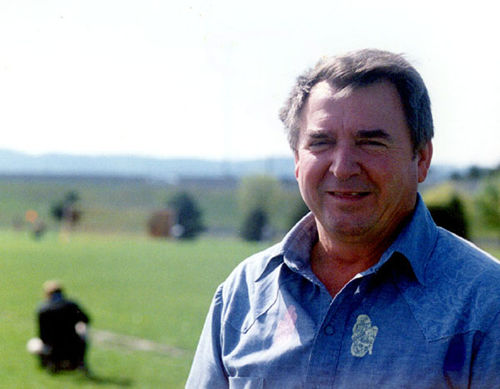

|
 TED ZYELINSKE |
|
IMHO- Ted Zyelinske was the GPSD, from the late
80's to 90's. As GPSD Board members came and went due to boredom, burn-out,
heart attack and personality clashes, the League knew it would survive
because of Ted. And if the GPSD survived, Old Nicks/FC77 prospered. Preference on the use of Delta Park? Ted had lunch with the city bureaucrats in charge. Civic Stadium for the GPSD Championships? Ted worked with Fred Meyer to get financial underwriting for the costs involved. As a Brazilian, Ted understood the cultural clashes that did occur with Hispanic teams and Anglo GPSD board members.An understanding phone call or two from Ted kept many a quality team in the GPSD. In support of the GPSD, Ted was the board member who made the tough, dues collection calls to those same managers. Ted's playing days had ended years before, due to injury. Unlike most of us, who drift away from soccer when our playing ability is gone, Ted found enjoyment in the people of adult soccer in Portland. The mental image of Ted I really enjoy is the following. Ted used to go to Woodburn, Oregon and do soccer match announcing at the local public field. With Woodburn's ethnic mix of Old Believer Russians, Mexicans and Anglo locals there was a language problem. With Ted's incredible background, he calmly made the PA announcements in Russian, Spanish and English to the polyglot crowd. Those of us who knew him, truely miss him. Read
here about Ted's induction into the USASA Regional Hall Of
Fame in 2002. |